《现代软件开发技术》上机实验手册：Git版本管理工具实践
目录
实验主题
Git版本管理工具实践
实验目标
- 理解Git版本控制系统的基本概念和工作原理
- 掌握Git常用命令的使用方法
- 学会使用Gitee在线代码仓库进行代码管理
- 掌握IDEA和VSCODE等IDE与Git的集成配置
- 学会创建和使用.gitignore文件
- 掌握分支管理策略（创建、合并、冲突消解）
- 了解代码审查和分支保护机制
资源
git工具官方网站：
https://git-scm.com/在线代码仓库：
https://github.com/（境外）
https://gitee.com/（境内）离线代码仓库：
https://gitlab.com/目的与意义
git一直服务于团队合作的最前沿，但是作为个人开发者使用git工具管理自己的代码和文件也具有非凡的意义。
长周期的代码版本控制与备份
版本控制和备份：管理代码的不同版本，可随时恢复到以前的工作状态，避免数据丢失。选择长期且稳定的在线代码仓库至关重要。
代码训练的激励机制
学习和成长的激励机制：通过查看提交历史，个人开发者可以反思和学习自己的代码变更，了解哪些改动带来了积极或消极的影响。
学习专业化工作流程：使用Git可以帮助个人开发者养成专业的软件开发习惯，如定期提交、撰写详细的提交信息等，这对职业发展非常有帮助。
代码的开放及交流
共享和协作：即使是个人项目，开发者也可以使用Git轻松地与其他人共享代码，接受建议和反馈，提升项目质量。
代码仓库的创建与配置（以Gitee为例）
https://gitee.com/在本次短学期实习中，我们选择Gitee为例子。
首先我们需要注册Gitee账号。然后进入 个人主页 -> 个人设置 -> 邮箱管理 选项中。
作为重要的第一步，我们需要配置提交邮箱。
默认情况下，提交邮箱 在git中扮演身份识别的角色。如下：

在开始使用Git之前，我们需要先进行Git的基础配置。打开命令行终端（Windows使用Git Bash，macOS使用Terminal），执行以下命令配置身份信息：
# 配置用户名
git config --global user.name "你的真实姓名"
# 配置提交邮箱
git config --global user.email "你的邮箱@example.com"
# 配置默认分支名
git config --global init.defaultBranch master为了实现安全的免密通信，Git提供了两种主要的认证方式：SSH密钥认证（推荐）和用户名密码认证。
方式一：配置SSH密钥认证（推荐）
SSH密钥认证是一种更安全、更便捷的认证方式，无需每次输入密码。
生成SSH密钥对：在本地命令行中执行（一路回车默认即可）：
ssh-keygen -t ed25519 -C "你的邮箱@example.com"查看并复制公钥： - Windows:
cat ~/.ssh/id_ed25519.pub- macOS:cat ~/.ssh/id_ed25519.pub在Gitee中添加公钥：进入 Gitee
个人设置 -> SSH公钥，将复制的公钥内容粘贴进去并保存。测试连接：在命令行中执行：
ssh -T git@gitee.com如果提示
Welcome to Gitee.com, 你的用户名!说明配置成功。
方式二：用户名密码认证（简单但安全性较低）
如果不想配置SSH密钥，也可以使用用户名密码进行认证。
获取个人访问令牌（PAT）： - 进入 Gitee
个人设置 -> 安全设置 -> 个人访问令牌- 点击生成新令牌，勾选必要的权限（projects、user_info等） - 生成后复制保存令牌，只会显示一次使用方式： - 克隆仓库时使用HTTPS地址：
https://gitee.com/用户名/仓库名.git- 推送时用户名输入Gitee用户名，密码输入个人访问令牌
注意：密码认证存在安全风险，推荐使用SSH密钥认证方式。
随后，通过右上角菜单打开新建仓库页面。

根据自己的需求填写仓库名称、路径等信息。
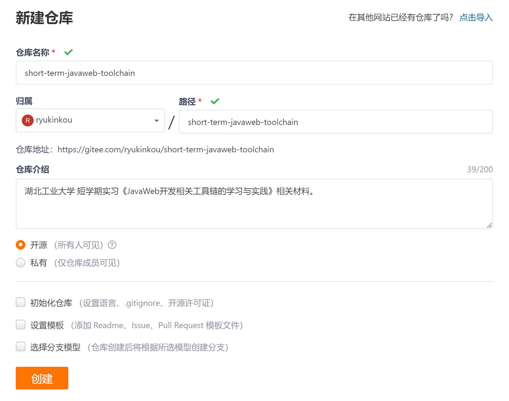
仓库创建完成后，会返回一个用于管理该仓库的地址信息。复制该信息。
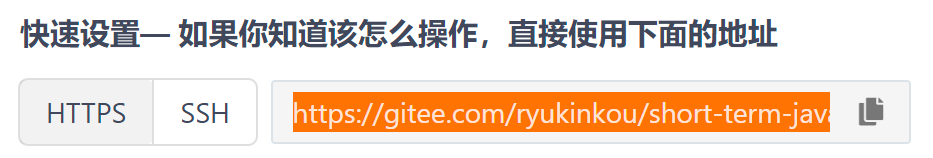
IDE的配置（以IDEA为例）
下载并安装git工具与Intellij IDEA。
检查git工具在IDEA中的配置是否完备。
进入IDEA的Settings界面（通过左侧菜单Customize -> All Settings进入）。
打开Version Control -> Git。
在Path to Git executable文本框中，找到并填入git.exe的位置。点击Test按钮。
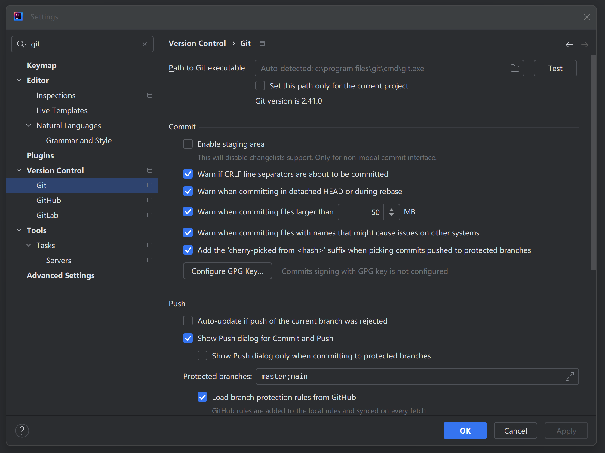
回到启动页，选择Get from Version Control。
输入刚才我们复制的仓库地址信息。点击Clone。
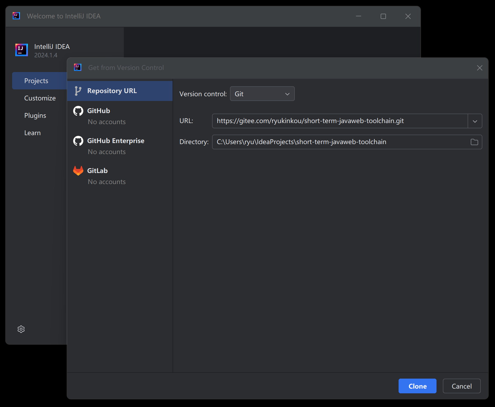
至此，我们已经完成了在IDEA中配置连接在线代码仓库的过程。
创建.gitignore文件
在提交代码之前，我们需要创建 .gitignore 文件，用于自动排除不需要提交到仓库的文件。
什么是.gitignore文件
.gitignore文件告诉Git哪些文件或目录不需要被版本控制。这可以避免将IDE配置文件、依赖库、编译产物等提交到仓库，保持仓库的清洁。
创建.gitignore文件
在项目根目录创建 .gitignore 文件，内容如下（以Java项目为例）：
# Java编译产物
*.class
*.jar
*.war
*.ear
target/
# IDE配置文件
.idea/
*.iml
*.iws
*.ipr
.vscode/
.vs/
*.suo
*.user
# 操作系统文件
.DS_Store
Thumbs.db
# 依赖库
lib/
*.dll
*.so
*.dylib
# 日志文件
*.log
logs/可以根据项目类型选择合适的.gitignore模板，例如：
- Python项目：添加 __pycache__/, *.pyc, venv/
- Node.js项目：添加 node_modules/, npm-debug.log
- C/C++项目：添加 *.o, *.obj, bin/, build/
使用.gitignore文件
- 在项目根目录创建
.gitignore文件 - 填写需要忽略的文件和目录规则
- 将
.gitignore文件提交到仓库
这样，Git会自动忽略这些文件，不会将它们提交到仓库。
提交代码
接下来，我们完成将本地代码提交到代码仓库的过程。
首先，我们创建并完成一个文件。在本次实践中，我们创建并使用一个README.md文件作为例子。
文件的颜色会发生一些变化，白色代表文件与仓库相等，绿色代表新追加的文件，蓝色代表该文件被修改过。
初次创建文件时，会弹出一个对话框，如下。选择Add。
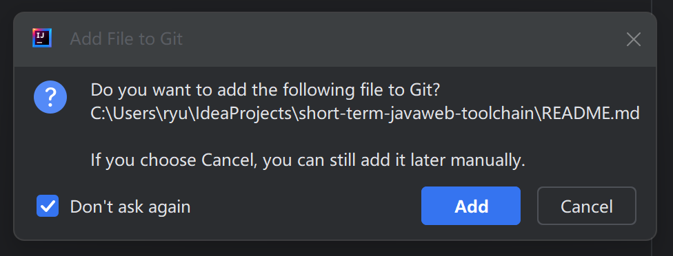
在我们创建的文件上面，点击右键，选择Git -> Commit File。

进入Commit界面后，检查我们需要提交的文件。
为了保证在线仓库的纯洁性，我们只提交和程序和代码相关的文件进入仓库。
而且尽量不要提交过大的文件。管理大文件并不是git工具所擅长的。
比如一些IDE的配置文件之类的数据不要提交到仓库。
最后，不要忘记填写提交说明。
提交信息规范（Conventional Commits）
推荐使用约定式提交规范，使提交历史更加清晰可读：
格式：<类型>: <描述>
常用类型：
- feat: 新功能 - 添加新功能
- fix: 修复bug - 修复缺陷
- docs: 文档更新 - 仅修改文档
- style: 代码格式 - 不影响代码运行的格式修改
- refactor: 重构 - 既不新增功能也不修复bug的代码修改
- test: 测试相关 - 添加或修改测试代码
- chore: 构建相关 - 构建流程或辅助工具的变动
示例：
feat: 添加用户登录功能
fix: 修复登录页面跳转错误
docs: 更新API文档
refactor: 重构用户认证逻辑
良好的提交信息有助于团队协作和代码审查。

提交代码会改变仓库的内容，所以在这一步中需要验证你的身份。
身份验证方式：
根据你选择的认证方式，有两种验证方法：
方式一：SSH密钥认证（推荐）
如果使用SSH密钥认证：不需要输入用户名和密码，直接提交即可。
- 确保使用SSH地址克隆仓库：git@gitee.com:用户名/仓库名.git
- 确保已正确配置SSH公钥
方式二：用户名密码认证
如果使用HTTP认证：
- Username填写Gitee用户名
- Password填写Gitee的个人访问令牌（PAT）或注册密码
- 确保使用HTTPS地址克隆仓库：https://gitee.com/用户名/仓库名.git
注意：密码认证存在安全风险，推荐使用SSH密钥认证方式。

如果一切正常，IDE右下角会显示相关信息。

同时，在Gitee的网站上，也会显示相应的内容。

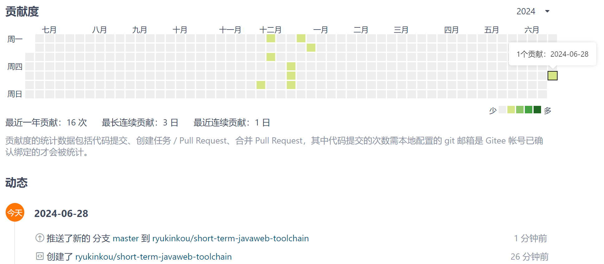
IDE的配置（以VSCODE为例）
VSCODE的配置内容和流程基本一致。
首先，在左侧列表中切换到第三个按钮，代表版本管理。
然后，在顶部输入框中输入仓库地址。回车后开始克隆仓库内容。
此时，下载的仓库已经包含我们上面提交过的内容。
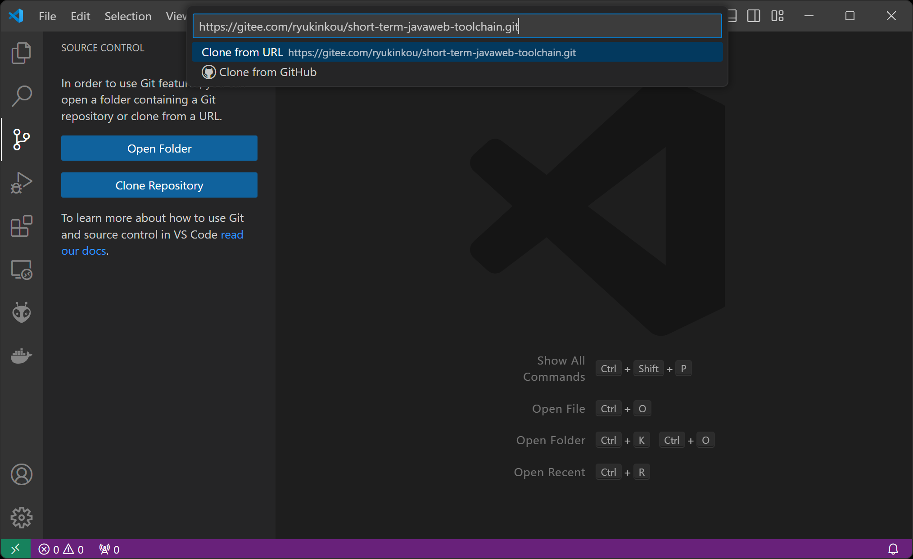
在本实践中，我们尝试在VSCODE中修改一下之前的README.md文档，用来测试VSCODE和在线仓库的配置是否完备。
切换回左侧第一个按钮，打开README.md文档，修改该文档，并保存。然后再次切换到第三个按钮处。
此时，被修改的文档被列在changes列表中，但Commit按钮尚未生效。
注意：这里和IDEA的流程稍微不一样，我们首先要点击文件右侧的+号，对修改进行暂存（Stage Changes）后才能提交。 这个过程在IDEA中自动完成了，但在VSCODE中需要我们手动完成。

这个时候，Commit按钮生效，可以提交代码了。
注意：提交代码其实有2个过程，即Commit向本地仓库提交修改，Push将这个修改推送给在线仓库。
我们可以选择Commit & Push，一次性完成这2个流程。
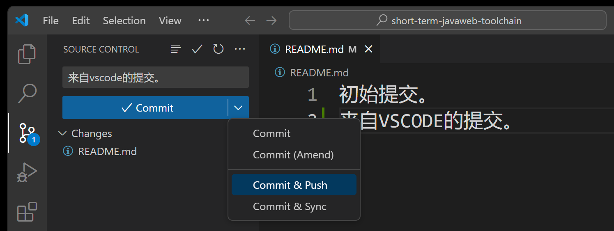
同样的，在Push到在线仓库的时候，需要验证你的身份。根据你选择的认证方式：
- SSH密钥认证（推荐）：不需要输入用户名和密码，直接提交即可
- 用户名密码认证：使用Gitee用户名和个人访问令牌进行验证

最后，检查一下在线仓库。

除了IDEA和VSCODE之外，市面上的绝大部分IDE都能够与git工具进行很好的连携，完成代码的版本管理工作，例如：
Android Studio
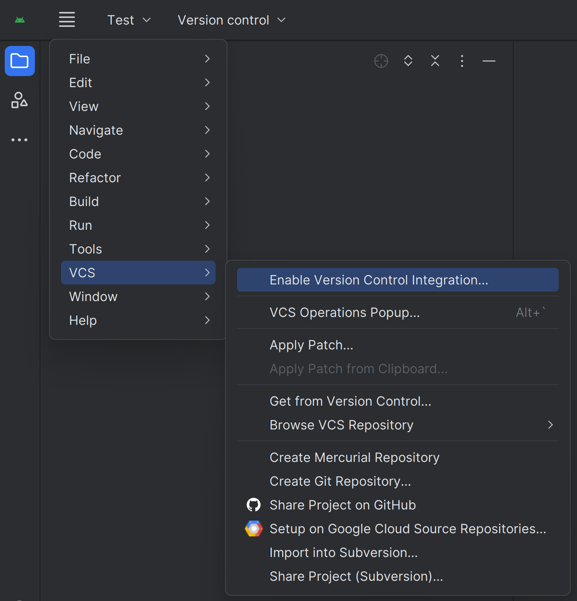
Visual Studio
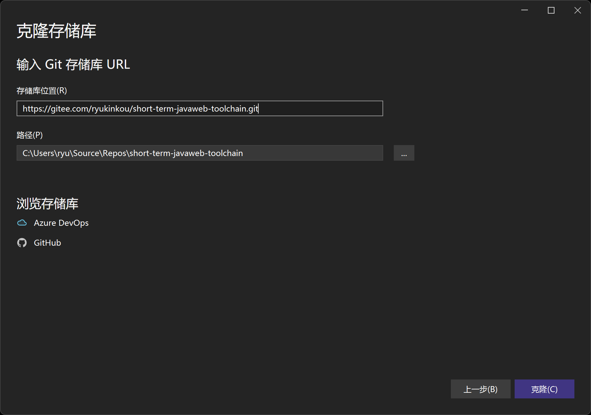
等等。
常用Git命令
除了IDE操作，了解Git命令行操作也很重要。以下是常用命令：
基础命令
# 查看仓库状态
git status
# 查看提交历史
git log
# 查看简洁的提交历史
git log --oneline --graph --all
# 查看文件变更
git diff
# 查看已暂存的变更
git diff --cached
# 撤销工作区修改
git checkout -- <文件名>
# 撤销暂存
git reset HEAD <文件名>分支操作
# 查看所有分支
git branch -a
# 创建并切换分支
git checkout -b <分支名>
# 切换分支
git checkout <分支名>
# 删除本地分支
git branch -d <分支名>
# 查看分支合并图
git log --graph --oneline --all远程操作
# 查看远程仓库
git remote -v
# 获取远程更新
git fetch
# 拉取并合并远程分支
git pull
# 推送本地分支到远程
git push origin <分支名>
# 删除远程分支
git push origin --delete <分支名>掌握这些命令可以帮助你更高效地使用Git。
两种机制：master直接提交与branch合并
在版本管理中，软件的各个版本的开发犹如一根根线段一样不停的向前发展。而master主线代表代码最健壮的，也是最初始默认的发展方向。
在上面的步骤中，我们演示了一种提交代码的方式，即向master主线直接提交代码的方式。
这种开发方式简单而直接，适合个人开发者完成个人产品。但也会带来一些风险和不确定性。
在团队开发或者开源软件开发中，通常我们采用：
创建分支（create branch） -> 基于分支开发 -> 发起合并请求（pull request） -> 合并分支到主线
的基于分支的开发流程。
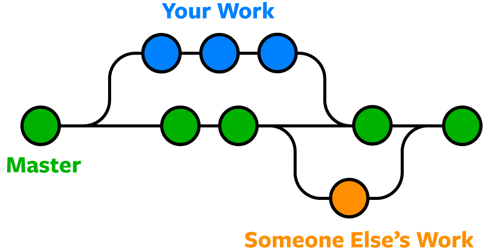
创建一个分支（branch）
分支命名规范
推荐使用以下分支命名规范，使分支管理更加清晰：
feature/xxx # 新功能分支，例如：feature/user-login
bugfix/xxx # 修复bug分支，例如：bugfix/login-error
hotfix/xxx # 紧急修复分支，例如：hotfix/security-patch
release/xxx # 发布分支，例如：release/v1.0.0
develop # 开发主分支
master/main # 生产主分支示例：
- feature/add-payment-method - 添加支付方式功能
- bugfix/fix-null-pointer - 修复空指针异常
- hotfix/critical-security-fix - 紧急安全修复
良好的分支命名有助于团队协作和版本管理。
以IDEA为例，默认情况下，我们在IDE中显示的是master主线代码，但是随着时间的发展，你的主线代码可能不再是最新的了。
这主要是因为你下载主线代码后，其他的小伙伴又更新了主线代码。
在创建新的分支的时候，我们首先要保证自身所拥有的代码为最新。
可以通过pull操作来完成。pull = fetch + merge，即先获取远程更新，然后自动合并到本地分支。在本地代码没有修改的情况下，这是安全的。
如下：

在同步了最新代码后，我们基于这个版本创建一个新的branch。

给这个分支一个名字，注意不要和现有的分支名冲突。
注意保持Checkout branch选项为选中，这样在分支创建后，IDE将自动切换到这个分支版本。

此时，我们可以看到，当前IDE的代码版本已经切换到了version0分支上。
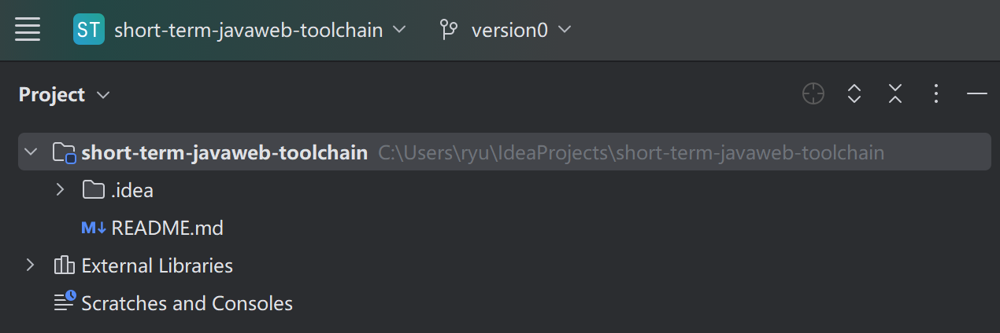
至此，我们的新分支就创建成功了。
合并分支
当我们在自己创建的分支辛勤工作并完成了任务后，那么还有最后一个步骤，就是将这个分支合并回master主线。让我们的贡献成为软件未来开发的基石。
首先，我们仍然像往常一样，提交代码到在线仓库，不过这次我们提交的对象是version0分支，而非master主线。
然后，我们发起一个Pull Request（合并请求），在Gitee中也称为Merge Request，告诉并请求管理者请合并version0的代码到master主线。

此时，我们切换到Gitee网站上，可以看到有如下信息：

点击创建 Pull Request（合并请求），在接下来的界面中小心检查源分支与合并分支，确保没有错误。然后填写相应的描述信息。
最后点击创建 Pull Request（合并请求）按钮。

进入审核界面后，需要测试员和审核员分别审核代码，确保代码不会劣化（之前可以正常运行的测试用例，更新后不能运行的情况）。
代码审查标准
代码审查是保证代码质量的重要环节，以下是审查清单：
代码质量
- [ ] 代码风格符合项目规范（缩进、命名、注释等）
- [ ] 没有重复代码或冗余代码
- [ ] 代码逻辑清晰，易于理解
- [ ] 没有硬编码的魔法数字或字符串
- [ ] 适当的注释和文档
功能完整性
- [ ] 功能需求完整实现
- [ ] 边界条件得到正确处理
- [ ] 异常情况有适当处理
- [ ] 有相应的测试用例
安全性
- [ ] 没有敏感信息泄露（密码、密钥等）
- [ ] 输入验证和数据清洗
- [ ] 防止SQL注入、XSS等安全漏洞
- [ ] 权限控制合理
兼容性
- [ ] 不破坏现有功能
- [ ] 向后兼容性考虑
- [ ] 数据库变更有迁移脚本
性能
- [ ] 没有明显的性能问题
- [ ] 避免不必要的数据库查询
- [ ] 循环和递归有终止条件
代码审查通过后才能合并到主线。
因为本例中只有一个分支更新了代码，所以不会出现冲突的情况。而且因为我们的开发者只有一名，所以你需要兼任测试与审核。
审核和测试完成后，点击合并分支按钮完成代码合并。

冲突消解
在刚才的例子中，我们描述了一种梦幻般的场景，即只有一名开发者开发，维护代码的情况，这种情况比较少见。
但在更多的场景中，将自己的分支合并到主线中的时候，难免会产生冲突。
因为是多人协作场景，所以你手上的基于master主线分叉出来的分支很快就会过期，别人添加了更多内容，甚至编辑了你正在编辑的文件。
当这样的代码尝试合并到master主线的时候，就会产生冲突。
例如，我们在创建version0的时候，同时创建了version1分支。
在刚才的version0流程中，我们对README.md文件做了修改，并最终将version0分支合并到了master主线中。
此时，version1分支的代码将会开始落后于master主线。
随后，我们同样修改了version1主线中的README.md文件，在其中添加了其他内容。
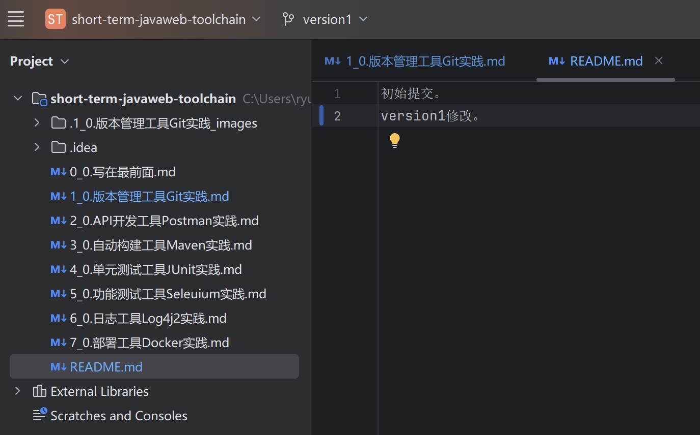
结束后，我们试图将version1分支内容合并到master主线中去。这是开发中非常常见的一种场景。
开发中一些共通的函数库、变量库，总是会被不同的开发小组同时修改。
但这样的合并将会产生冲突，这是git为了防止代码劣化的措施。
我们按照刚才的流程，Commit & Push version1的代码到在线仓库。
然后切换到Gitee网站中，创建一个从源分支为version1，合并分支为master的Pull Request（合并请求）。
然后在评审的界面中，我们发现了这个合并产生了冲突（注意存在冲突红字）。

我们打开WebIDE，发现README.md文件同时被两个分支所更新。
version0在前，version1在后。符合我们的流程。

这里有三个选择，接受后来者的更新（当前的更改），不接受后来者的更新（引入的更改），和接受两者的更新。

通过选择并点击其中一项，即可完成冲突的消解。
这里我们选择接受两者更新。然后点击暂存更改。
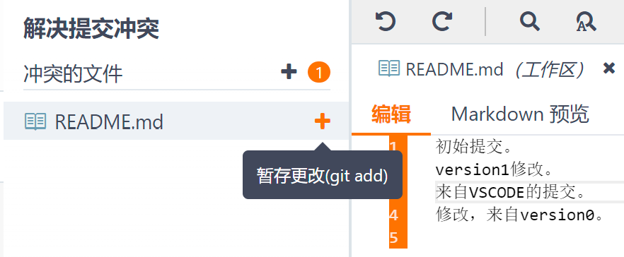
最后点击提交。
这时候，我们回到审核界面，发现存在冲突已经消失，可以正常审核并合并了。

就这样，冲突消解就完成了。
分支保护机制
为了防止随意提交到master主线导致代码劣化，我们可以在Gitee中设置分支保护规则。
设置分支保护
- 进入仓库主页，点击
设置 -> 保护分支 - 点击
添加保护分支 - 选择要保护的分支（通常是
master或main） - 配置以下规则：
推荐配置
- [ ] 不允许直接推送 - 禁止直接向保护分支推送代码
- [ ] 不允许强制推送 - 禁止使用
git push --force覆盖历史 - [ ] 不允许删除分支 - 防止误删除保护分支
- [ ] 要求合并前通过审核 - 必须至少1人审核通过才能合并
- [ ] 要求流水线通过 - CI/CD流水线必须通过才能合并
- [ ] 限制合并者 - 只有指定成员可以合并到保护分支
分支保护的作用
- 防止代码劣化 - 所有代码必须经过审核才能合并
- 保证代码质量 - 强制代码审查和测试验证
- 记录完整历史 - 所有变更都有完整的审核记录
- 团队协作规范 - 统一的提交流程和标准
设置分支保护后，所有开发者都必须通过分支合并请求的方式将代码合并到保护分支，不能直接推送。
最后
通过创建分支并最后合并主线的方式进行代码的版本管理，乍一看比master主线直接提交要复杂和难以理解的多。
但它却最大程度的保证了提交代码的严肃性，确保了代码审核过程的刚性执行，防止了随意提交导致的代码劣化情况发生。
在训练有素的程序员中，大家既不想随意提交代码到master导致master主线被劣化或污染，也不想自己的功能模块被别人随意提交的master代码所劣化感染导致测试用例失效。
所以在修改代码时，创建一个仅属于自己的分支，在自己的分支上尽情的修改、发挥，把代码合并的流程交给代码审核者，完全不需要考虑上述的情景会发生。
这就是分支管理的魅力所在。